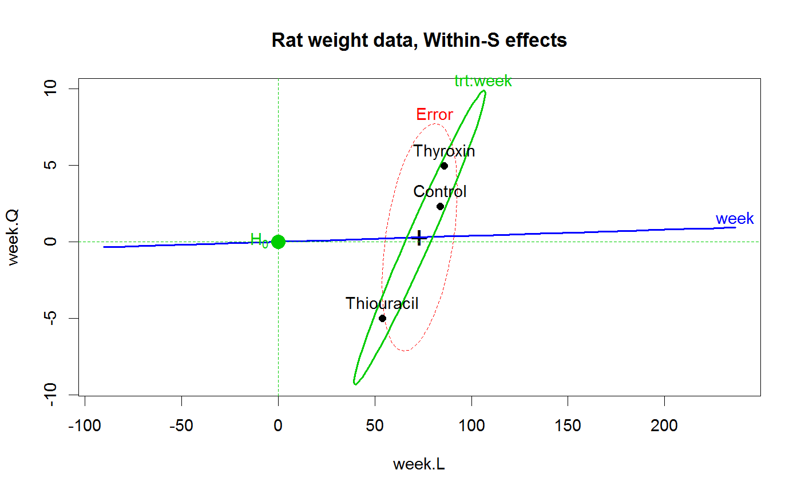

<!-- Generated by pkgdown: do not edit by hand -->
<!DOCTYPE html>
<html>
  <head>
  <meta charset="utf-8">
<meta http-equiv="X-UA-Compatible" content="IE=edge">
<meta name="viewport" content="width=device-width, initial-scale=1.0">

<title>Weight Gain in Rats Exposed to Thiouracil and Thyroxin — RatWeight • heplots</title>

<!-- jquery -->
<script src="https://code.jquery.com/jquery-3.1.0.min.js" integrity="sha384-nrOSfDHtoPMzJHjVTdCopGqIqeYETSXhZDFyniQ8ZHcVy08QesyHcnOUpMpqnmWq" crossorigin="anonymous"></script>
<!-- Bootstrap -->
<link href="https://maxcdn.bootstrapcdn.com/bootswatch/3.3.7/cerulean/bootstrap.min.css" rel="stylesheet" crossorigin="anonymous">

<script src="https://maxcdn.bootstrapcdn.com/bootstrap/3.3.7/js/bootstrap.min.js" integrity="sha384-Tc5IQib027qvyjSMfHjOMaLkfuWVxZxUPnCJA7l2mCWNIpG9mGCD8wGNIcPD7Txa" crossorigin="anonymous"></script>

<!-- Font Awesome icons -->
<link href="https://maxcdn.bootstrapcdn.com/font-awesome/4.6.3/css/font-awesome.min.css" rel="stylesheet" integrity="sha384-T8Gy5hrqNKT+hzMclPo118YTQO6cYprQmhrYwIiQ/3axmI1hQomh7Ud2hPOy8SP1" crossorigin="anonymous">


<!-- pkgdown -->
<link href="../pkgdown.css" rel="stylesheet">
<script src="../jquery.sticky-kit.min.js"></script>
<script src="../pkgdown.js"></script>
  
  
<!-- mathjax -->
<script src='https://mathjax.rstudio.com/latest/MathJax.js?config=TeX-AMS-MML_HTMLorMML'></script>

<!--[if lt IE 9]>
<script src="https://oss.maxcdn.com/html5shiv/3.7.3/html5shiv.min.js"></script>
<script src="https://oss.maxcdn.com/respond/1.4.2/respond.min.js"></script>
<![endif]-->


  </head>

  <body>
    <div class="container template-reference-topic">
      <header>
      <div class="navbar navbar-default navbar-fixed-top" role="navigation">
  <div class="container">
    <div class="navbar-header">
      <button type="button" class="navbar-toggle collapsed" data-toggle="collapse" data-target="#navbar">
        <span class="icon-bar"></span>
        <span class="icon-bar"></span>
        <span class="icon-bar"></span>
      </button>
      <a class="navbar-brand" href="../index.html">heplots</a>
    </div>
    <div id="navbar" class="navbar-collapse collapse">
      <ul class="nav navbar-nav">
        <li>
  <a href="../index.html">
    <span class="fa fa-home fa-lg"></span>
     
  </a>
</li>
<li>
  <a href="../reference/index.html">Reference</a>
</li>
      </ul>
      
      <ul class="nav navbar-nav navbar-right">
        
      </ul>
    </div><!--/.nav-collapse -->
  </div><!--/.container -->
</div><!--/.navbar -->

      
      </header>

      <div class="row">
  <div class="col-md-9 contents">
    <div class="page-header">
    <h1>Weight Gain in Rats Exposed to Thiouracil and Thyroxin</h1>
    </div>

    
    <p>The data are from a study of weight gain, where investigators randomly assigned
30 rats to three treatment groups: treatment 1 was a control (no additive); 
treatments 2 and 3 consisted of two different additives (thiouracil and thyroxin
respectively) to the rats drinking water. Weight was measured at
baseline (week 0) and at weeks 1, 2, 3, and 4.
Due to an accident at the beginning of the study, data on 3 rats from the
thyroxin group are unavailable.</p>
    

    <pre class="usage"><span class='fu'>data</span>(<span class='no'>RatWeight</span>)</pre>
        
    <h2 class="hasAnchor" id="format"><a class="anchor" href="#format"></a>Format</h2>

    <p>A data frame with 27 observations on the following 6 variables.</p><dl class='dl-horizontal'>
    <dt><code>trt</code></dt><dd><p>a factor with levels <code>Control</code> <code>Thiouracil</code> <code>Thyroxin</code></p></dd>
    <dt><code>wt0</code></dt><dd><p>Weight at Week 0 (baseline weight)</p></dd>
    <dt><code>wt1</code></dt><dd><p>Weight at Week 1</p></dd>
    <dt><code>wt2</code></dt><dd><p>Weight at Week 2</p></dd>
    <dt><code>wt3</code></dt><dd><p>Weight at Week 3</p></dd>
    <dt><code>wt4</code></dt><dd><p>Weight at Week 4</p></dd>
  </dl>
    
    <h2 class="hasAnchor" id="details"><a class="anchor" href="#details"></a>Details</h2>

    <p>The <code>trt</code> factor comes supplied with contrasts comparing <code>Control</code> to each of 
<code>Thiouracil</code> and <code>Thyroxin</code>.</p>
    
    <h2 class="hasAnchor" id="source"><a class="anchor" href="#source"></a>Source</h2>

    <p>Originally from Box (1950), Table D (page 389), where the values for weeks 1-4
were recorded as the gain in weight for that week.</p>
<p>Fitzmaurice, G. M. and Laird, N. M. and Ware, J. H (2004).
<em>Applied Longitudinal Analysis</em>, New York, NY: Wiley-Interscience.
<a href='https://rdrr.io/rforge/ALA/'>https://rdrr.io/rforge/ALA/</a>.</p>
    
    <h2 class="hasAnchor" id="references"><a class="anchor" href="#references"></a>References</h2>

    <p>Box, G.E.P. (1950). Problems in the analysis of 
growth and wear curves.  <em>Biometrics</em>, 6, 362-389.</p>
<p>Friendly, Michael (2010). HE Plots for Repeated Measures Designs. <em>Journal of Statistical Software</em>,
  37(4), 1-40. URL <a href='http://www.jstatsoft.org/v37/i04/'>http://www.jstatsoft.org/v37/i04/</a>.</p>
    

    <h2 class="hasAnchor" id="examples"><a class="anchor" href="#examples"></a>Examples</h2>
    <pre class="examples"><div class='input'><span class='fu'>data</span>(<span class='no'>RatWeight</span>)
<span class='fu'>contrasts</span>(<span class='no'>RatWeight</span>$<span class='no'>trt</span>)</div><div class='output co'>#&gt;            [,1] [,2]
#&gt; Control      -1   -1
#&gt; Thiouracil    1    0
#&gt; Thyroxin      0    1</div><div class='input'>
<span class='no'>rat.mod</span> <span class='kw'>&lt;-</span> <span class='fu'>lm</span>(<span class='fu'>cbind</span>(<span class='no'>wt0</span>, <span class='no'>wt1</span>, <span class='no'>wt2</span>, <span class='no'>wt3</span>, <span class='no'>wt4</span>) ~ <span class='no'>trt</span>, <span class='kw'>data</span><span class='kw'>=</span><span class='no'>RatWeight</span>)
<span class='no'>rat.mod</span></div><div class='output co'>#&gt; 
#&gt; Call:
#&gt; lm(formula = cbind(wt0, wt1, wt2, wt3, wt4) ~ trt, data = RatWeight)
#&gt; 
#&gt; Coefficients:
#&gt;              wt0        wt1        wt2        wt3        wt4      
#&gt; (Intercept)   54.75714   76.88571  102.21905  123.67143  149.15238
#&gt; trt1          -0.05714   -0.58571   -6.41905  -15.47143  -25.15238
#&gt; trt2           0.81429   -1.02857    2.63810    9.04286   13.70476
#&gt; </div><div class='input'>
<span class='no'>idata</span> <span class='kw'>&lt;-</span> <span class='fu'>data.frame</span>(<span class='kw'>week</span> <span class='kw'>=</span> <span class='fu'>ordered</span>(<span class='fl'>0</span>:<span class='fl'>4</span>))
<span class='fu'>Anova</span>(<span class='no'>rat.mod</span>, <span class='kw'>idata</span><span class='kw'>=</span><span class='no'>idata</span>, <span class='kw'>idesign</span><span class='kw'>=</span>~<span class='no'>week</span>, <span class='kw'>test</span><span class='kw'>=</span><span class='st'>"Roy"</span>)</div><div class='output co'>#&gt; 
#&gt; Type II Repeated Measures MANOVA Tests: Roy test statistic
#&gt;             Df test stat approx F num Df den Df    Pr(&gt;F)    
#&gt; (Intercept)  1   140.617   3374.8      1     24 &lt; 2.2e-16 ***
#&gt; trt          2     0.657      7.9      2     24  0.002334 ** 
#&gt; week         1    56.188    295.0      4     21 &lt; 2.2e-16 ***
#&gt; trt:week     2     1.979     10.9      4     22 5.059e-05 ***
#&gt; ---
#&gt; Signif. codes:  0 <U+0091>***<U+0092> 0.001 <U+0091>**<U+0092> 0.01 <U+0091>*<U+0092> 0.05 <U+0091>.<U+0092> 0.1 <U+0091> <U+0092> 1</div><div class='input'>
<span class='co'># quick look at between group effects</span>
<span class='fu'>pairs</span>(<span class='no'>rat.mod</span>)</div><div class='img'></div><div class='input'>
<span class='co'># between-S, baseline &amp; week 4</span>
<span class='fu'><a href='heplot.html'>heplot</a></span>(<span class='no'>rat.mod</span>, <span class='kw'>col</span><span class='kw'>=</span><span class='fu'>c</span>(<span class='st'>"red"</span>, <span class='st'>"blue"</span>, <span class='st'>"green3"</span>, <span class='st'>"green3"</span>),
        <span class='kw'>variables</span><span class='kw'>=</span><span class='fu'>c</span>(<span class='fl'>1</span>,<span class='fl'>5</span>),
        <span class='kw'>hypotheses</span><span class='kw'>=</span><span class='fu'>c</span>(<span class='st'>"trt1"</span>, <span class='st'>"trt2"</span>),
        <span class='kw'>main</span><span class='kw'>=</span><span class='st'>"Rat weight data, Between-S effects"</span>)</div><div class='img'></div><div class='input'>
<span class='co'># within-S</span>
<span class='fu'><a href='heplot.html'>heplot</a></span>(<span class='no'>rat.mod</span>, <span class='kw'>idata</span><span class='kw'>=</span><span class='no'>idata</span>, <span class='kw'>idesign</span><span class='kw'>=</span>~<span class='no'>week</span>, <span class='kw'>iterm</span><span class='kw'>=</span><span class='st'>"week"</span>,
        <span class='kw'>col</span><span class='kw'>=</span><span class='fu'>c</span>(<span class='st'>"red"</span>, <span class='st'>"blue"</span>, <span class='st'>"green3"</span>),
<span class='co'>#	hypotheses=c("trt1", "trt2"),</span>
        <span class='kw'>main</span><span class='kw'>=</span><span class='st'>"Rat weight data, Within-S effects"</span>)</div><div class='img'></div><div class='input'>
</div></pre>
  </div>
  <div class="col-md-3 hidden-xs hidden-sm" id="sidebar">
    <h2>Contents</h2>
    <ul class="nav nav-pills nav-stacked">
      
      <li><a href="#format">Format</a></li>

      <li><a href="#details">Details</a></li>

      <li><a href="#source">Source</a></li>

      <li><a href="#references">References</a></li>
      
      <li><a href="#examples">Examples</a></li>
    </ul>

  </div>
</div>

      <footer>
      <div class="copyright">
  <p>Developed by John Fox, Michael Friendly.</p>
</div>

<div class="pkgdown">
  <p>Site built with <a href="http://hadley.github.io/pkgdown/">pkgdown</a>.</p>
</div>

      </footer>
   </div>

  </body>
</html>
